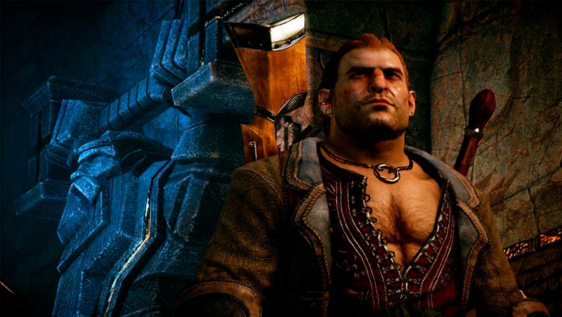
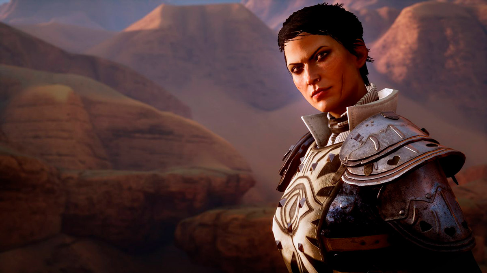
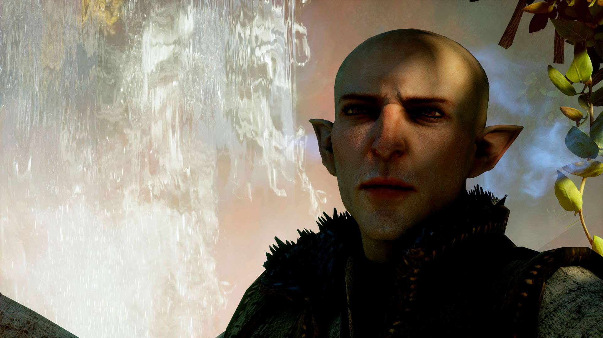
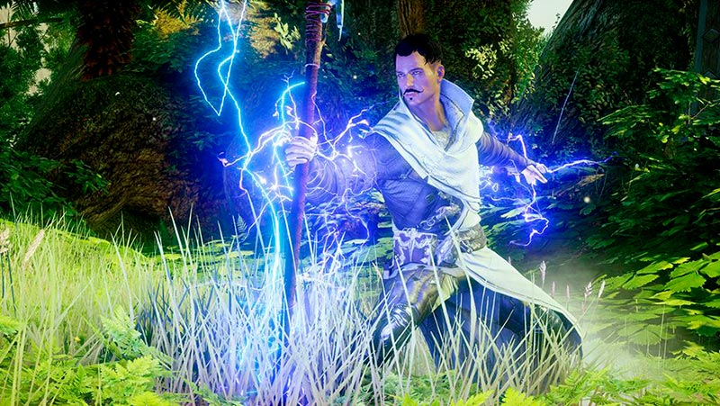
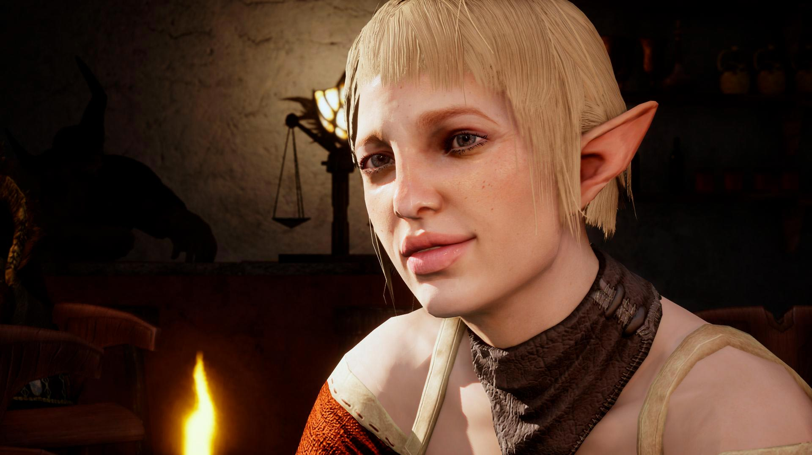

Dragon Age: Inquisition
Es bien flaite este juego, se nota que les faltó tiempo para terminarlo. Sin embargo, me gusta caleta.
El combate es re weno y aunque se extrañan las Tactics del 2, es una buena evolución, ahora más rápido y fluido.
Los diálogos sufrieron un downgrade. No sé por qué, pero nunca logré sentir al Inquisidor como propio.
Por otro lado, me encantan los compañeros de esta entrega. Yo creo que BioWare no decepcionó en este aspecto. El único que me parece un poco flojo es Varric, que pasó de ser tu mejor amigo en el 2 a… nada. Yo creo que lo metieron solo para conectar las dos historias.
Pero la falla más grande es el villano: Corypheus… ¿quién es Corypheus? No tiene ni un brillo. Llega a su peak es In Your Heart Shall Burn, después vale c*******.
Cuando llegué al final ya no me importaba nada so I cheesed it con Sera y lo maté en un segundo (en Hard).
En fin, yo se lo recomendaría a quienes son fan de BioWare o quieren una historia decente y están dispuestos a ignorar los contratiempos que tiene el juego.
→ Steam / Origin / PlayStation Store / Microsoft Store




